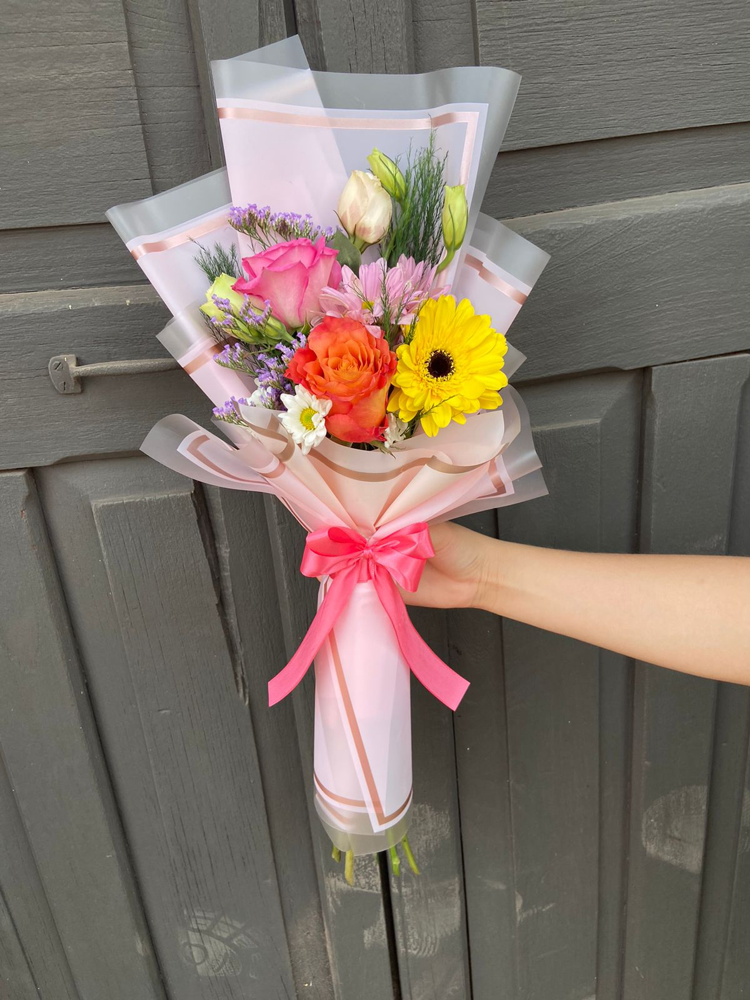
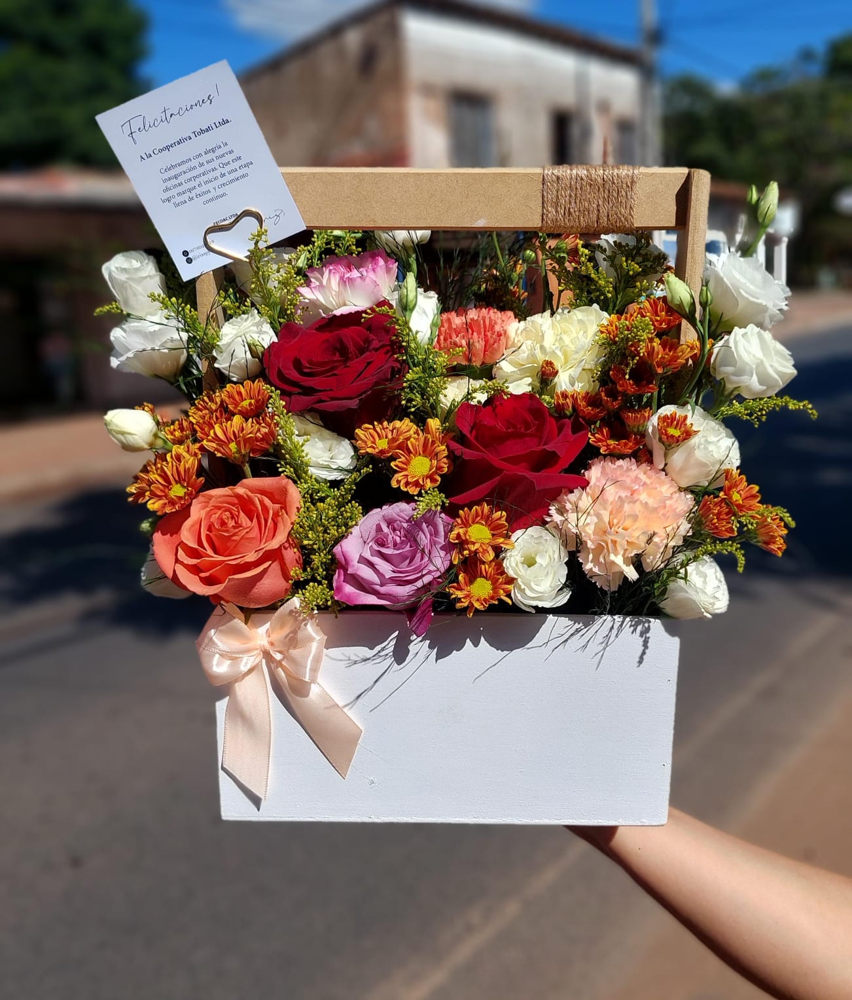
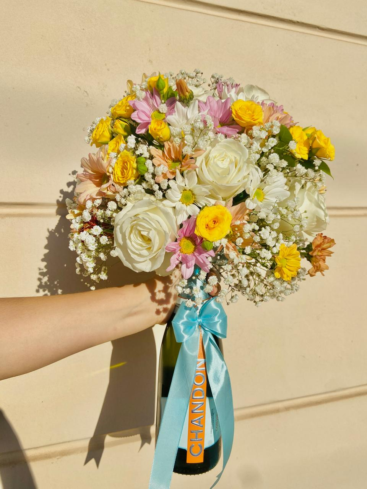
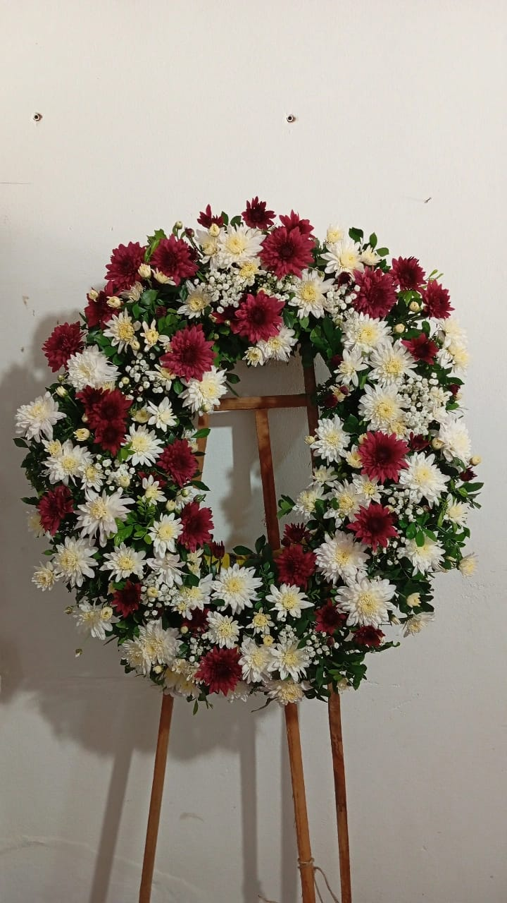

Nuestros Servicios

Ramos
Descubre nuestra exclusiva colección de ramos florales diseñados para cada ocasión especial, cada ramo es una expresión de belleza y emoción. Personaliza tu pedido y sorprende a quién más quieres con un detalle inolvidable.
Ver Catálogo
Cajas con flores
Ofrecemos arreglos florales en elegantes cajas rígidas, disponibles en varios tamaños y colores. Cada caja contiene flores frescas seleccionadas, presentadas con cuidado y un toque de diseño único.
Ver Catálogo
Arreglos de mesa con florero
Decora tus espacios con elegancia y frescura. Nuestros arreglos de mesa con florero combinan flores naturales de temporada con recipientes cuidadosamente seleccionados para complementar cualquier estilo.
Ver Catálogo
Corona fúnebre
Homenajea con dignidad y respeto la memoria de un ser querido. Ofrecemos diseños clásicos y personalizados, con flores frescas y seleccionadas, dispuestas con delicadeza para trasmitir paz, amor y acompañamiento en momentos difíciles.
Ver Catálogo